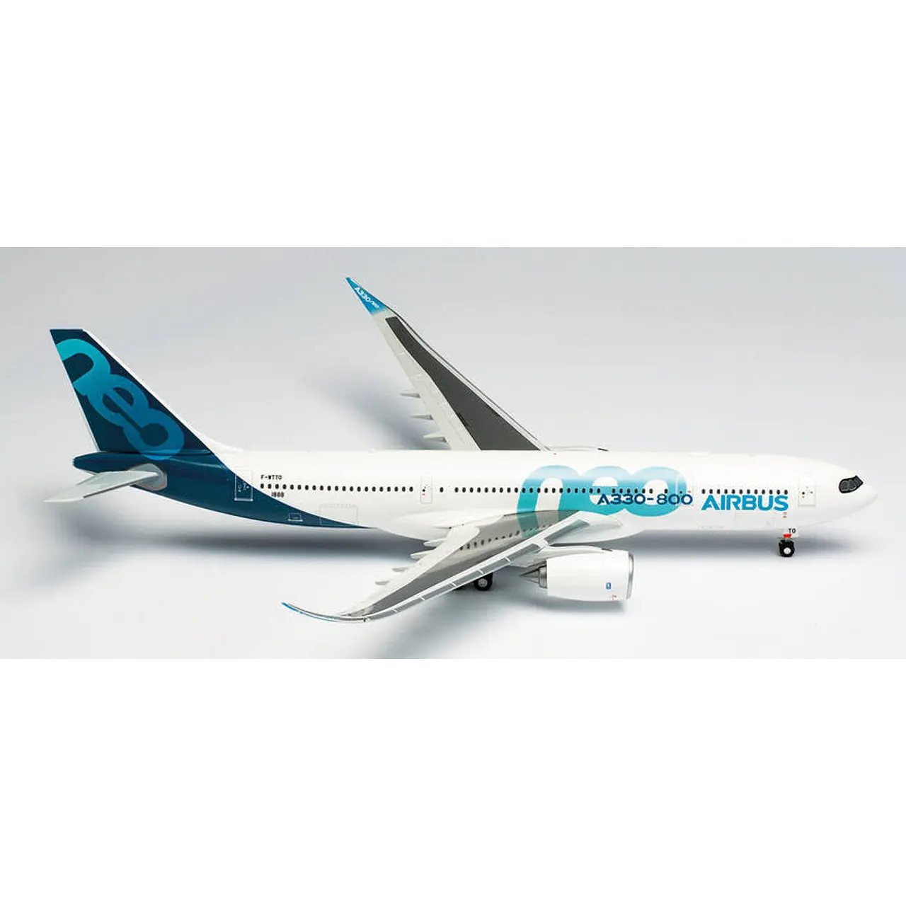
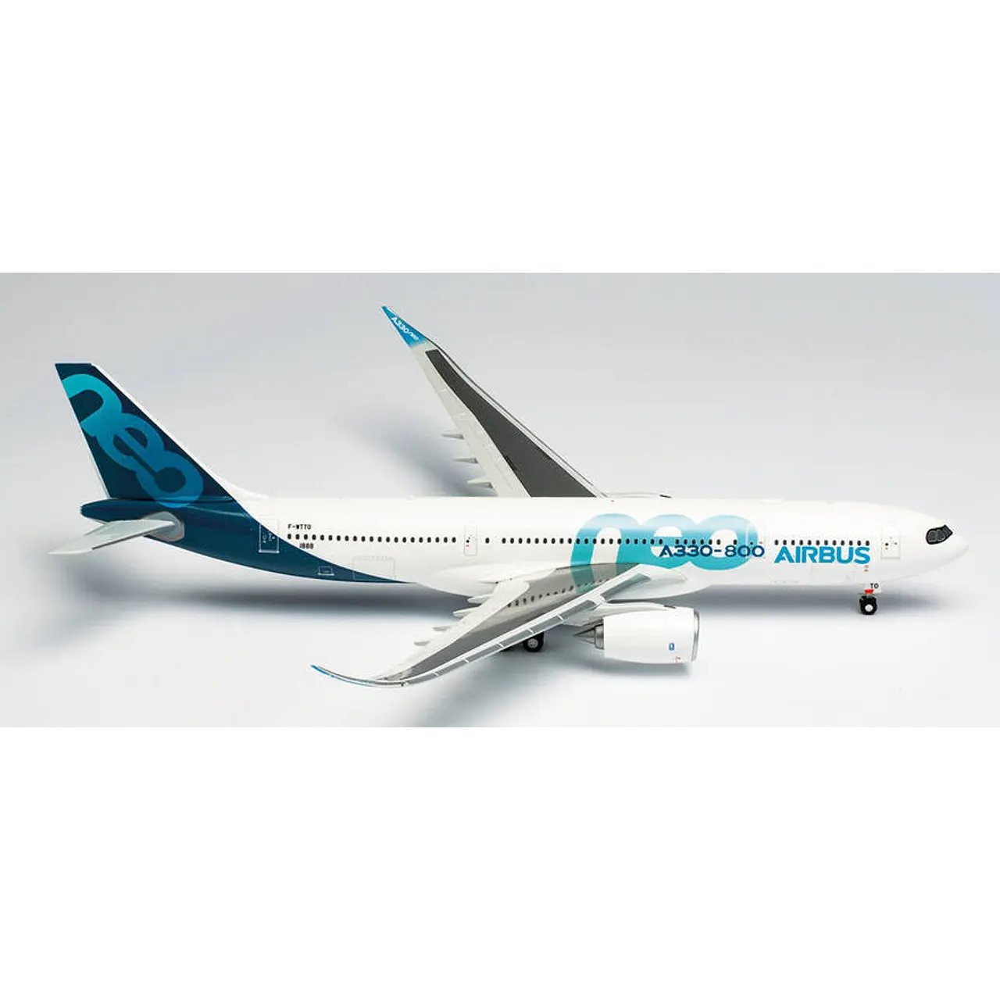

A330-800
Avión Colección A330-800Neo Airbus Indust 1/200 $395.000 COP
Descripción:
Herpa Antonov Airlines AN-225 1/500 515726
El gran éxito de la familia A330 fue una de las razones que llevaron a Boeing a desarrollar el 787.
Si bien se creó la familia A350 completamente nueva, también se decidió modernizar el A330 actual.
Además del A330-900neo, sucesor directo del A330-300, Airbus también ofrece, aunque hasta ahora con
menos éxito, una variante de la serie -800 de fuselaje corto pero más capaz y con una autonomía de
hasta 15.000 kilómetros como modelo directo. sucesor del A330-200.